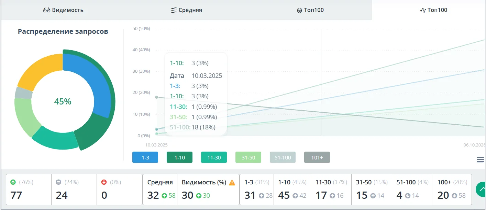
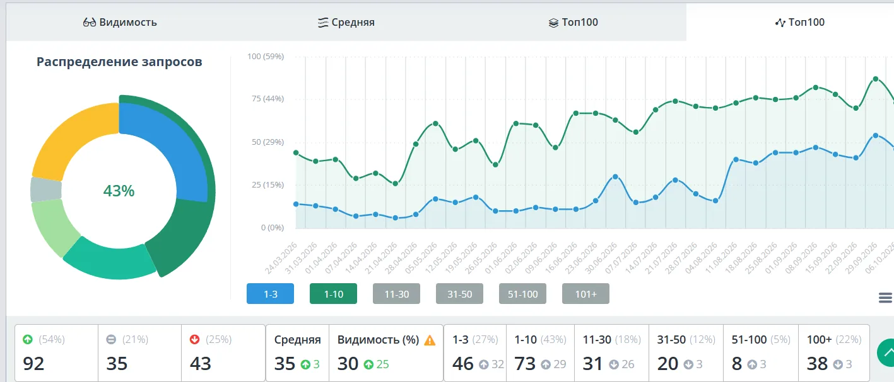
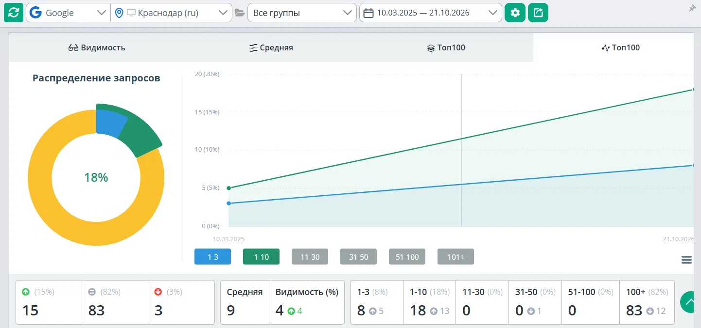

[ SEO-проект · март 2025 - октябрь 2026 ]
Типография: (в 15 раз)
Что было
Сайт типографии на самописном движке почти не показывался в поиске: из 101 запроса, по которым ищут её услуги, в топ-10 Яндекса было всего 3.
Что нашла
- Технические ошибки: неверные ответы сервера, дубли страниц, служебные страницы в поиске
- Страницы, которые мешали друг другу: две страницы боролись за один и тот же запрос, и ни одна не выходила в топ
- Тексты, написанные для поискового робота, а не для человека
- Услуги, которые люди ищут, а страницы под них на сайте нет
Что сделала
- Техническая чистка сайта: ответы сервера, дубли, служебные страницы
- Удалила страницы, которые конкурировали друг с другом за одни запросы
- Сняла переоптимизацию текстов
- Каждый месяц новые страницы под спрос из семантики
- Коммерческие блоки и FAQ на ключевых страницах
Что изменилось для людей
- На ключевых страницах появились ответы на вопросы покупателя: стоимость, примеры работ, форма заявки, отзывы, частые вопросы
- У каждой услуги своя страница: человек попадает сразу туда, где описано то, что он искал. Например, наклейки на витрину магазина вынесены отдельно от остальных наклеек: по выдаче видно, что это разные люди с разными задачами
Результат
Сайт на самописном движке почти не показывался в поиске. Число запросов в топ-10 Яндекса выросло с 3 до 45 из 101, в топ-3 с 3 до 31. В Google в топ-10 было 5, стало 18.





